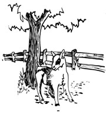

SUE GROSS:
My husband and I have just read the goat chapter from Grow It! in MOTHER NO. 22 and feel that we must throw in a few remarks for the consideration of other readers.
It would have been helpful to know where Richard Langer got his information, and how long he's raised goats personally. So much of what he says just doesn't check with my own five years' worth of intensive and sometimes tragic experience ... five years during which we've owned and boarded enough different goats to have handled a fair cross section of the breeds and the problems one is likely to run into.
It seems sad for MOTHER to be publishing advice that doesn't agree with real practice or natural methods. As an alternative, we'd like to suggest that novices can avoid many problems by trusting nature.
Here, first of all, are a couple of the points with which we disagree:
[1] Langer's suggestions on housing and equipment for dairy goats-as well as on their purchase-are swell if you have that kind of money. I never have and never will. It's far better, anyhow, to provide the minimum shelter necessary in your climate. Here in California we have no barn at all but merely a roofed shade where the creatures are healthy and happy. Being tied to a wall in a shed would be slow death to my animals!
Milking equipment can be equally simple: a blue earthenware pot, mesh strainer and fiber milk filters. Any tight glass jars will do for containers, and-unless you feel that you must go in for super-caution-you can forget all that jazz about ice and sterilization. Your dairy should be clean, yes ... because that is natural.
[21 Grow It! is also way off base in its advice on grain feeding. Four to eight pounds a day would kill a goat, lactating or not ... those figures must be a misprint. If top-quality alfalfa is fed on a free-choice basis and the proper mineral salt mixture is always available, there's no real need for any grain except perhaps in very cold weather.
Purina recommends one pound of Goat Chow for each three pounds of milk given by a doe, and one pound minimum daily for dry goats and kids. This is really way too much ... such a heavy ration will make the animals too fat and lazy, reduce milk output in some cases and cause loose bowels in others.
Next, I'd like to tell my own "goat story" to show why I feel as I do about natural methods of husbandry.
We had a fine scrub Nubian doe that gave three quarts of milk a day. She was our first, and we loved her dearly. I did everything in my power to follow the advice of "experts" . tempering their words with some common sense and what I learned by trial and error. (The animal, unhappily, was the one that suffered from my learning process.)
Since I have a child who nearly died before we found goat milk, I have to have a year-round supply ... so I began looking for a second doe. I'd almost lost hope of finding anything worth having in my price range when a neighbor told me about a registered French Alpine, of champion stock, that was going cheap because her blemishes made her unshowable. She had just freshened for the second time and had given birth to triplets. Best of all, she cost only $35.00. I jumped at the bargain.
The papers were all in order and-since the doe looked beautiful-I bought her. The owners told me that she'd been attacked by dogs the previous year and that her bag was no longer perfect: Fluid leaked from tiny holes on the udder's sides during milking, but not when the animal was at rest. The bag was well-shaped otherwise, though, and I felt that I'd managed a "steal".
The next morning, however, it was obvious that my new goat was not well. Her udder was hot and red-swollen but without much milk. I was frantic ... we had spent every spare dime to buy the Alpine so there was no reserve with which to pay a vet. The sale was final, and I was stuck.
I had to call my only milk customer and tell her I had no supply available ... and her family turned out to have the answer to my trouble. They knew nothing about livestock but-being interested in everything to do with health and nutrition-they brought by a book called Vermont Folk Medicine. The author, Dr. D.C. Jarvis, had set up practice in a remote part of the Green Mountain State where he discovered that the old-time residents had a very profound, natural system for maintaining health, seldom needed his services and lived to a serene old age. They were more than willing to share what they knew, and Dr. Jarvis learned that the main addition to his neighbors' plain, unprocessed food was raw apple cider vinegar. The same substance was also used as a veterinary preventive and remedy.
My customers had brought a quart of the vinegar with them and the taste and smell were so delicious and appetizing that decided to try Dr. Jarvis' methods on my sick goat. The treatment was simple: two tablespoons of vinegar to one pound of dairy grain twice a day ... every day. The idea is to maintain the chemical balance in the body for prevention of illness as well as for the cure of specific infection.
It worked! By the fifth day our patient was eating normally, the milk was nearly clear and the rough coat and dull eyes were gone for good. We started using our new doe's output on the seventh day and were pleased with the rich, sweet flavor ... her milk has never tasted "goaty".
Darlene (the Alpine) loved the vinegar and didn't want the grain without it. The other goats started getting the same dose-you bet!-and total production rose even though the Nubian was due to dry up. In fact, I had to take her off grain and vinegar to stop her lactation.
Then I made a big mistake. After nine months of terrific milk production and an easy mating (Darlene had always been very hard to breed before, since she stayed in heat only six to eight hours), I dried the Alpine up as I had the other nanny. Because she was a little too fat I decided to cut the grain out of her diet ... and in so doing I got careless about the vinegar.
The doe was in blooming good health and looked ready to have quadruplets. She freshened easily with two delightful and devilish buck kids-very large and active-and I was thrilled.
At that point the result of my mistake became clear. Within 24 hours Darlene had raving mastitis, and the kids had to be removed for fear they'd get sick from her milk. I restarted the vinegar at once, along with every herb and plant I could offer her. She took comfrey with relish, and little else ... except the vinegar grain, which she ate with frantic speed. I mixed more of the acid in warm water with molasses, and my poor doe drank it in sobbing gulps.
That treatment stopped the mastitis cold, without vets or antibiotics. Darlene was well in three days, the kids were returned to her and the milk was perfectly normal.
My goat will never again pass a day without her dose of vinegar ... and neither will I. Darlene also gets fresh tomatoes, comfrey, cornstalks, leaves and a hundred other fresh, natural foods from the garden. When she bloats a little from a new bale of hay, I give her an armful of mint sprigs. It works. I just put all the feed where she can get it and let her choose.
The fresh or dry tops of onions and garlic are a special treat for the goats ... when the animals aren't in production (because such food makes their milk taste pretty bad). I grow stock beets, pumpkins and soybeans just for the herd, and the does repay me with terrific milk and large healthy kids that don't need pampering and sterile conditions to survive.
I must add one tragic experience to this story in the hope that if other goats are saved I'll be repaid in some measure for the loss of our dearest animal friend. Cocoa, the Nubian we had first, was found one afternoon in her pen quite dead. She had choked on her own collar. The band was fairly snug on her neck and I'll never know how she got her nose into it too. A freak accident, to be sure, but so unnecessary! The sole purpose of the collar is to give one control of the animal when it's outside the pen, and the small convenience isn't worth the risk.
Another sad experience makes me angry that Langer suggests using a collar to tether a goat. If you must do such a miserable thing as tie your animal, make or buy a well-fitted halter such as you would use for a horse or cow.
The incident that makes me say this with such heat concerned a goat that was brought here to board after a mishap. That doe had been tied out with collar and chain practically since birth and was as used to it as an animal can be . . . yet one day a dog attacked her and she was so badly frightened that she broke her windpipe when she hit the end of the tether. She was saved from her enemy, but she wheezed and gasped pitifully for every breath and her owners brought her to me in the hope of a cure. None was possible and she died shortly with her spirit broken as well as her windpipe. What a waste for want of a fence!
To sum it all up, I think it's obvious that the more natural and loving we can be to ourselves and our animals, the better off we'll be. Chemicals and manipulation may do the job, but never better than good ole Ma. I'd be glad of any feedback-pro or con-on my ideas ... I'm still learning from the bottom up and have a very long way to go.
|
 |
|
|